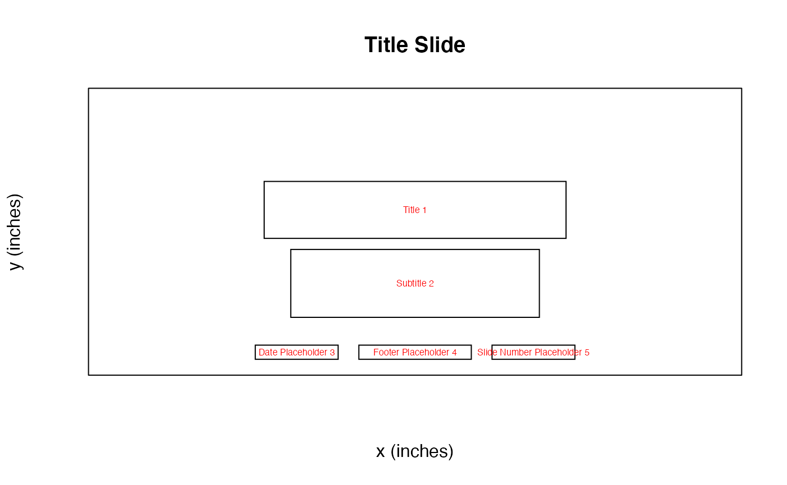
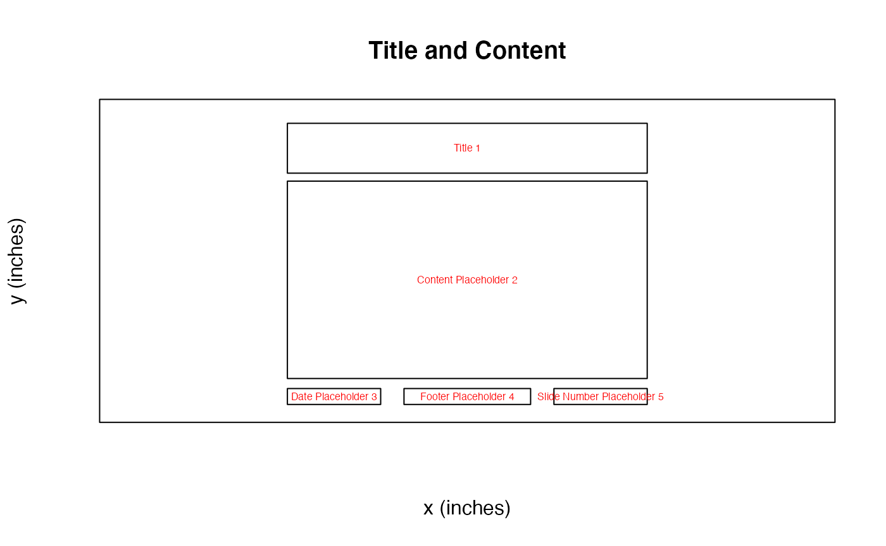
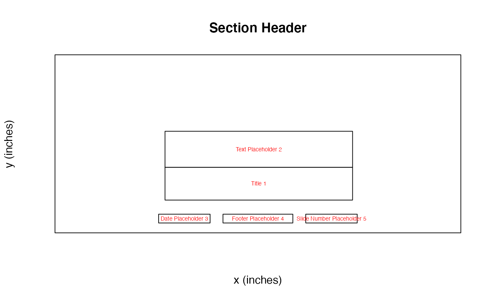
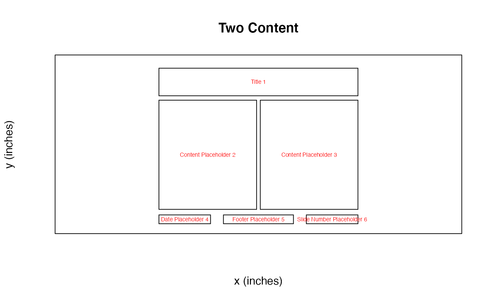
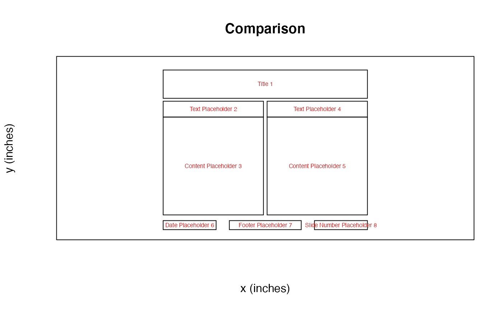
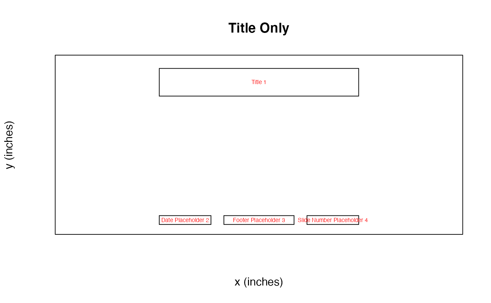
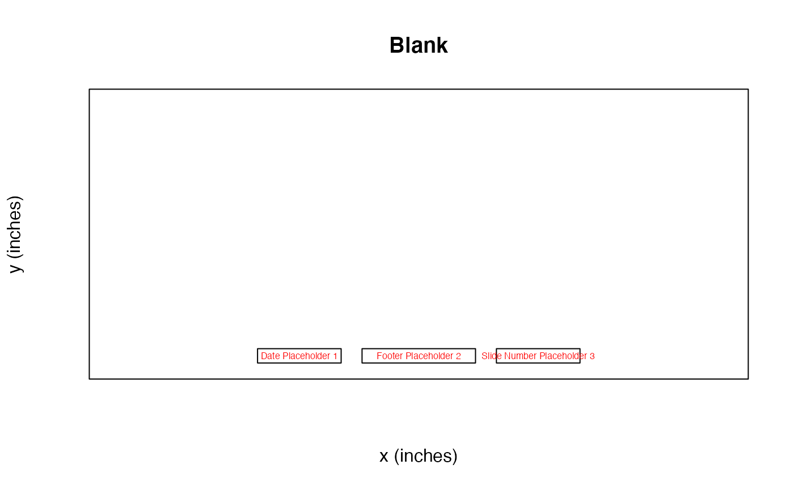

Let’s go through how to make a basic presentation using rpptx!
rpptx leverages the power of the officer package and the ease of use of powerpoint templates to form a simple and easy to use API to create powerpoint slide decks straight from R. Therefore, the first thing we need to do is to choose a powerpoint template. This is a normal .pptx file that has the template we want in Slide Master. By default, rpptx uses the default template in officer, which seems like a slight variation on the default Microsoft powerpoint template.
Let’s start by creating a presentation.
presentation <- new_presentation()
print(presentation)
#> Presentation with 0 slides.
print(template_path(presentation))
#> [1] "/Users/runner/work/_temp/Library/officer/template/template.pptx"We can see this is an empty presentation with the template path set to the default officer template. What’s in this template? We can check easily using some utility functions.
get_layouts(presentation)
#> layout master
#> 1 Title Slide Office Theme
#> 2 Title and Content Office Theme
#> 3 Section Header Office Theme
#> 4 Two Content Office Theme
#> 5 Comparison Office Theme
#> 6 Title Only Office Theme
#> 7 Blank Office ThemeThis template has seven different layouts. That’s good to know, but it doesn’t help us entirely figure out which layout to use for which purpose. Let’s keep going!
layouts <- get_layouts(presentation)$layout
for (layout in layouts) {
plot_layout(presentation, layout)
title(main = layout)
}
Now we can see for each slide layout what options we have to use as placeholders! Knowing this, we can move forward and start constructing our presentation!
In r2pptx syntax, presentations are made up of slides which are made up of elements. elements represent anything we want to add to the deck – text, plots, images, tables, etc. Anything compatible with the officer package works here!
We start out making a title slide with a title and subtitle. We give elements for the title and subtitle as arguments to the new_slide() function. And we give “Title Slide” as the layout name, per the information from above.
title_slide <- new_slide(
layout = "Title Slide",
elements = list(
new_element(key = "Title 1", value = "The title"),
new_element(key = "Subtitle 2", value = "The subtitle")
)
)
print(title_slide)
#> Slide with 2 elements:
#> - character
#> - characterelements have two arguments. The key tells R where to place the element. Currently, this only supports a placeholder label. Placeholder labls are the name of placeholders, which are the objects in a powerpoint slide layout (as seen above). Future development may allow other location specifications, such as giving x and y positions.
Now we add the title slide to our presentation.
presentation <- presentation + title_slide
print(presentation)
#> Presentation with 1 slides.Easy!
Let’s add another slide with a ggplot. This time, we’ll add the elements to the slide rather than initializing the slide with elements.
# create the slide object
plot_slide <- new_slide(layout = "Title and Content")
print(plot_slide)
#> Slide with 0 elements:
#> -
# create an element for the title element
title_element <- new_element(key = "Title 1", value = "A plot")
# create a ggplot
cars_plot <- ggplot(mtcars, aes(x = mpg, y = cyl)) +
geom_point()
# create an element for the plot
plot_element <- new_element(key = "Content Placeholder 2", value = cars_plot)
plot_slide <- plot_slide +
title_element +
plot_element
print(plot_slide)
#> Slide with 2 elements:
#> - character
#> - gg
presentation <- presentation +
plot_slide
print(presentation)
#> Presentation with 2 slides.And then we can write the presentation to powerpoint.
ppt_path <- tempfile(fileext = ".pptx")
write_pptx(presentation, ppt_path)
if (interactive()) system(paste("open", ppt_path))And you have a slide deck! Congrats!